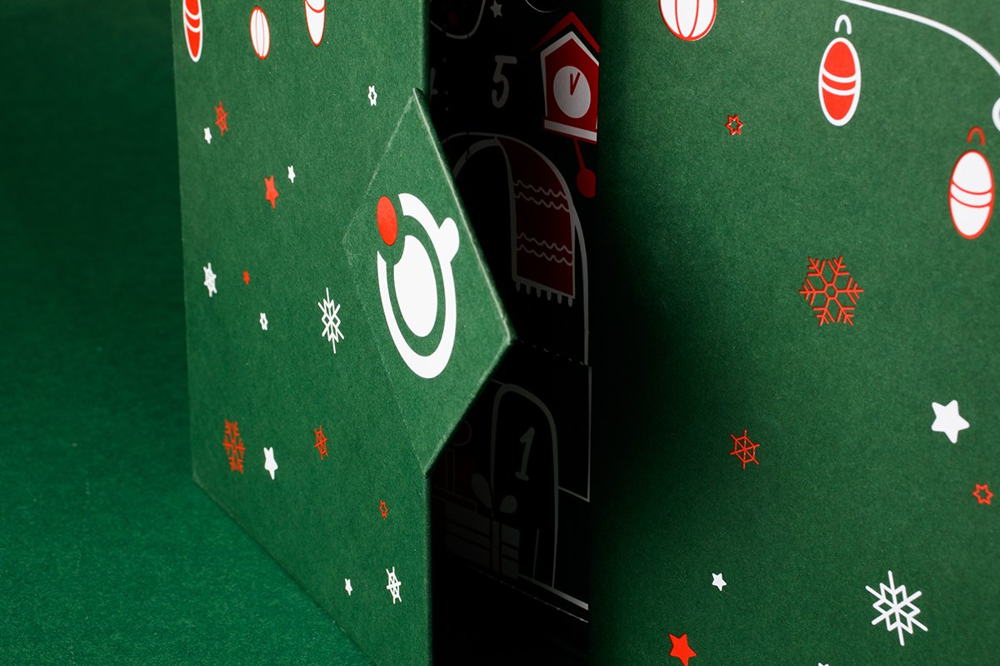
Адвент-календарь
Придумаем конструкцию под ваше наполнение, нарисуем дизайн и сделаем тираж на своём производстве.
Ваш лучший адвент-календарь
-
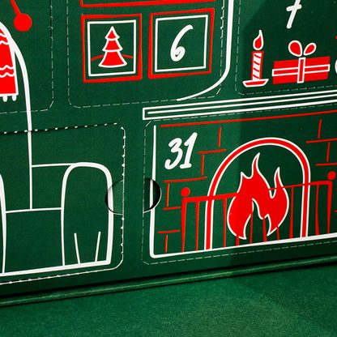
Каждое окошко продолжает одну иллюстрацию — календарь хочется открывать по порядку, а не вскрыть за раз.
-
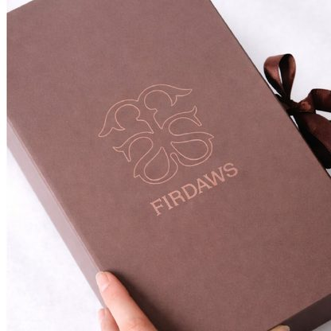
На крышке, без краски: фактура читается пальцами и не стирается.
-
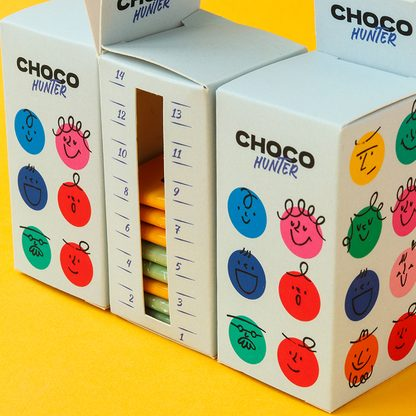
Видно, сколько дней осталось, не открывая коробку.
-
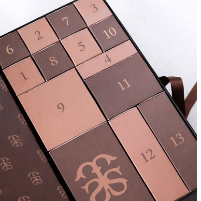
Нужный день приходится искать — и это часть игры. Или по порядку, если внутри нарастающий сюжет.
-
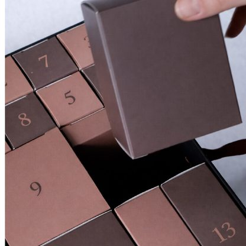
Ящички разного размера под разное наполнение — от пробника до свечи.
-
Любое число дней
12, 24, 31 — или столько, сколько длится ваш повод. Не только Новый год.
-
Лента или магнит
Крышка на завязке или на магнитах: коробка закрывается как шкатулка и живёт после праздника.
-
Именной тираж
Имя получателя или логотип клиента печатаем прямо на коробке — для корпоративных подарков без наклеек.
Работы
Зачем адвент-календарь бизнесу
-
Не один подарок, а двадцать четыре
Обычный подарок открывают раз. Календарь открывают каждый день, и каждый раз — с вашим логотипом перед глазами.
-
Стоит на виду до самого праздника
Его не убирают в ящик и не передаривают: он нужен каждый день, значит, весь месяц стоит на столе.
-
Наполнение — любое
Шоколад, косметика, чай, мерч, карточки с промокодами. Конструкцию считаем от предмета, а не наоборот.
-
Его фотографируют
Коробку с сюжетом показывают в соцсетях — подарок работает и на тех, кому не достался.
Материалы и конструкция
Конструкция
-
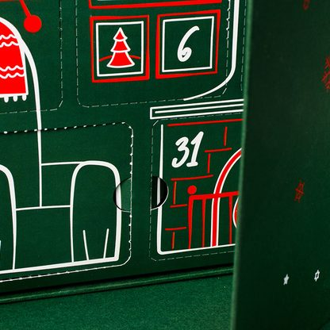
Дверцы с вырубкойОкошки надрезаны штампом, открываются пальцем и остаются на петле
-
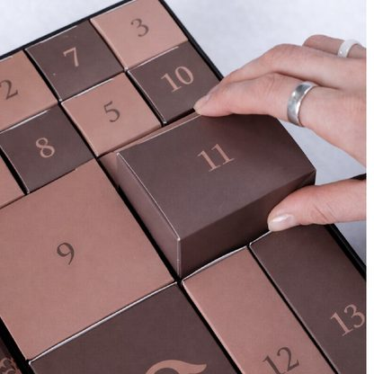
ЯщичкиВыдвижные коробочки в общем корпусе, каждую можно достать целиком
-
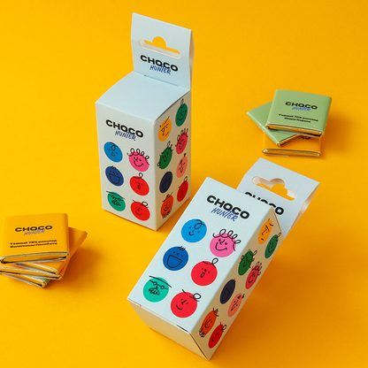
Коробка с окошкомКартонный пенал, содержимое видно через прорезь
Ещё 2 вариантаСвернуть
-
Шкатулка с крышкой
Крышка на ленте или магните, внутри ложемент с ячейками
-
Нестандартная форма
Домик, ёлка или ваш продукт по вырубке — стоит сам
Материал
-
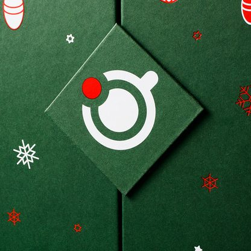
Переплётный картон, кашировкаЖёсткий корпус 1,5–2 мм, оклеен запечатанной бумагой. Держит форму и вес
-
Картон 300–350 г
Складная коробка под лёгкое наполнение, заметно дешевле в тираже
-
Микрогофрокартон
Лёгкий и прочный — под тяжёлое наполнение и отправку почтой
Ещё 2 вариантаСвернуть
-
 Дизайнерская бумага для оклейки
Дизайнерская бумага для оклейкиФактурная или тонированная в массе, хорошо держит тиснение
-
Ложемент
Картон, изолон или ЭВА — ячейки точно под предмет

Печать
-
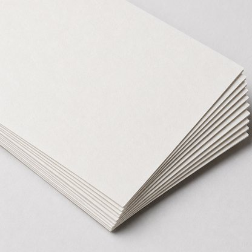
Цифровая печатьВыгодна на малых тиражах
-
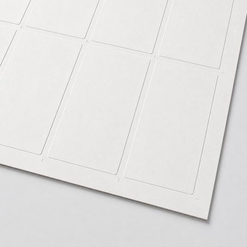
ОфсетДешевеет с ростом тиража, имеет смысл от тысячи
-
Печать белилами
По крафту и тонированной бумаге, чтобы цвет не провалился
Ещё 1 вариантСвернуть
-
Плашка Pantone
Точный фирменный цвет, который не собрать из четырёх красок
Отделка
-
 Тиснение фольгой
Тиснение фольгойЛоготип и номера золотом, серебром или цветной фольгой
-
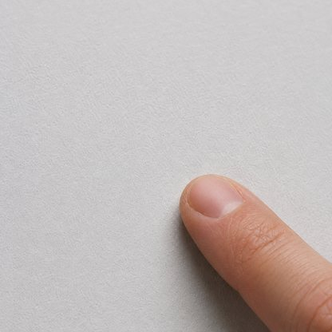
Ламинация софт-тачБархатная на ощупь, не собирает отпечатки пальцев
-
Блинтовое тиснение
Вдавленный оттиск без краски и фольги

Ещё 2 вариантаСвернуть
-
Выборочный УФ-лак
Глянцевый рельеф на отдельных элементах
-
Лента и магниты
Завязка, петля или магнитный замок в крышке
Как мы работаем
-
Разбираемся в задаче
В день обращения. Спросим, что кладёте внутрь, сколько дней и сколько штук. От предмета зависят конструкция, картон и цена.
-
Придумываем конструкцию и макет
3–5 дней. Пришлём чертёж развёртки и первый вариант дизайна. Правки по макету входят в стоимость.
-
Собираем образец
3–5 дней. Один календарь вживую: проверите, как открываются окошки и садится наполнение.
-
Печатаем и собираем тираж
2–3 недели. Печать, вырубка, кашировка и сборка на своём производстве. Забираете сами или привозим по адресу.
Весь путь от заявки до готового тиража — 4–6 недель
Частые вопросы
Сколько окошек можно сделать?
Сколько нужно: 24 или 31 к Новому году, 12 — к Рождеству, 7 — на неделю до дня рождения. Число и размер ячеек считаем от наполнения, а не от шаблона.
Что нужно знать до начала работы?
Что будет внутри, сколько штук и когда нужно. Наполнение — главное: размер ячейки считается от предмета с запасом, поэтому лучше прислать образец или хотя бы размеры.
А если у нас есть только логотип?
Этого достаточно. Придумаем сюжет, нарисуем иллюстрацию и подберём конструкцию. Если есть фирменный стиль — пришлите гайдлайн, встроимся в него.
Когда заказывать к Новому году?
В сентябре — октябре. На дизайн, образец и тираж с кашировкой уходит четыре — шесть недель, а в ноябре производство загружено под праздники. В декабре берёмся за срочные, но выбор конструкций уже.
Есть ли минимальный тираж?
Берёмся и за небольшие. Но вырубной штамп и подготовка стоят одинаково и на 30 экземплярах, и на 500, поэтому маленький тираж выходит дороже за штуку. Цифру назовём после первого разговора.
Можно увидеть образец до тиража?
Да. Перед тиражом собираем один календарь вживую: по нему видно цвет, плотность картона и как открываются окошки. Тираж запускаем после того, как вы его подержали в руках.
Из чего делают адвент-календарь?
Чаще всего — переплётный картон с кашировкой: корпус жёсткий и держит вес. Для лёгкого наполнения подойдёт складная коробка из картона 300–350 г, она заметно дешевле. Под тяжёлое или для отправки почтой — микрогофрокартон.
Доставляете по России?
Да, отправляем транспортной компанией в любой город. По Москве привозим сами или отдаём на самовывоз в Холодильном переулке.
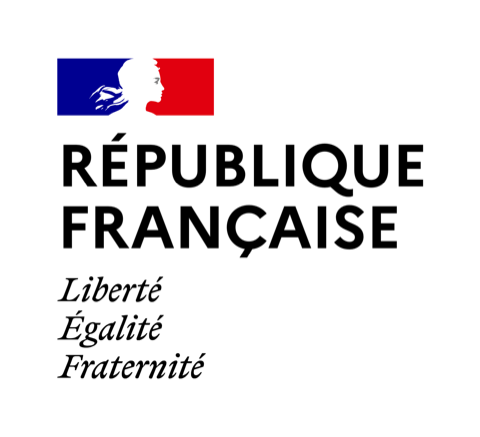
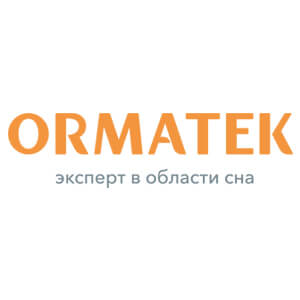
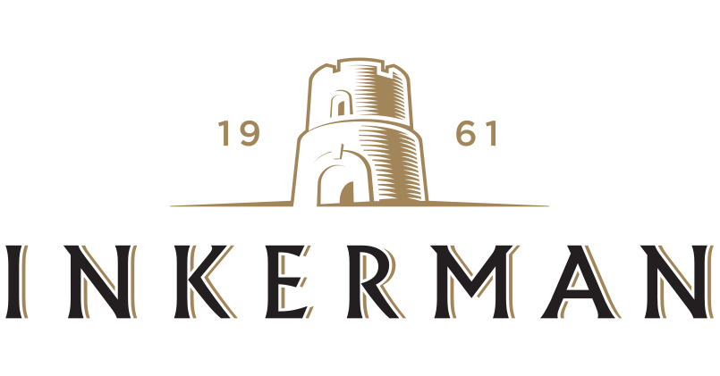
Посчитаем и подскажем
Оставьте контакт — вернёмся со сметой и вариантами. Если задача решается проще, так и скажем.
Что дальше
- Посмотрим задачу и уточним, если чего-то не хватает
- Посчитаем стоимость под ваш тираж и сроки
- Пришлём смету и первый вариант макета
Не любите формы — напишите в Telegram, WhatsApp или Max, позвоните +7 495 021-35-77 или напишите на zakaz@litera.studio.
Об адвент-календарях
Адвент-календарь заказывают, когда нужен подарок, который не забудут через день. Чаще всего — бренды косметики, чая и шоколада под собственный продукт, и компании к Новому году для сотрудников и клиентов. Спрос идёт волной с сентября по ноябрь, и чем ближе праздник, тем меньше конструкций, которые успеем сделать.
Читать дальшеСвернуть
Конструкция начинается с наполнения. От размера и веса предмета зависят ячейка, картон и способ сборки: под пробники хватит складной коробки с дверцами, под свечи или банки нужен жёсткий корпус с ложементом. Поэтому первым делом мы просим прислать то, что ляжет внутрь, — или хотя бы размеры.
Дизайн адвент-календаря — не одна картинка, а сюжет на двадцать четыре шага. Хорошо, когда окошки продолжают друг друга и календарь хочется открывать по порядку. Номера можно расставить вразброс — тогда поиск нужного дня становится частью игры. Логотип уместнее тиснением на крышке, чем крупной печатью на каждой дверце.